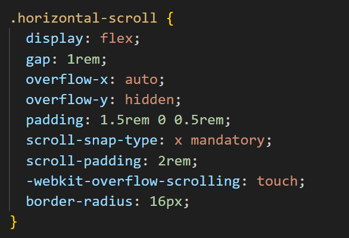

Media Gallery
Scroll through images or videos with precise snapping.
Designing controlled, story‑driven scrolling experiences with modern CSS — no JavaScript required for the core effect.
CSS Scroll Snap is a layout feature that lets you define “snap points” along a scrollable container. Instead of stopping at random positions, the scroll locks into place at these points, similar to slides in a presentation or pages in a mobile app.
This matters because it gives designers more control over how content is consumed. It’s especially powerful for storytelling layouts, product showcases, and any experience where each section should feel intentional and self‑contained.
CSS Scroll Snap is already used in many modern interfaces, including:
Below is a real example: a horizontally scrollable card carousel built entirely with CSS Scroll Snap.

.jpg)

.jpg)


Drag or swipe left/right to feel the snap behavior in action.
scroll-snap-type: y mandatory on the main container.overflow-x: auto and scroll-snap-type: x mandatory.scroll-snap-align: start to ensure snapping.To recreate this, you can copy this structure, adjust the colors and content, and experiment with different snap points and layouts.

CSS Scroll Snap is supported in all major modern browsers, including:
Older browsers that don’t support Scroll Snap will simply ignore the snap properties and fall back to normal scrolling. This means no hard breakage, just a less enhanced experience. For most use cases, no polyfills are required.
A polyfill is a piece of code (usually JavaScript) used in web development to provide modern functionality to older browsers that do not natively support it.
These resources informed both the technical implementation and the design decisions on this page. They also added to its charm!